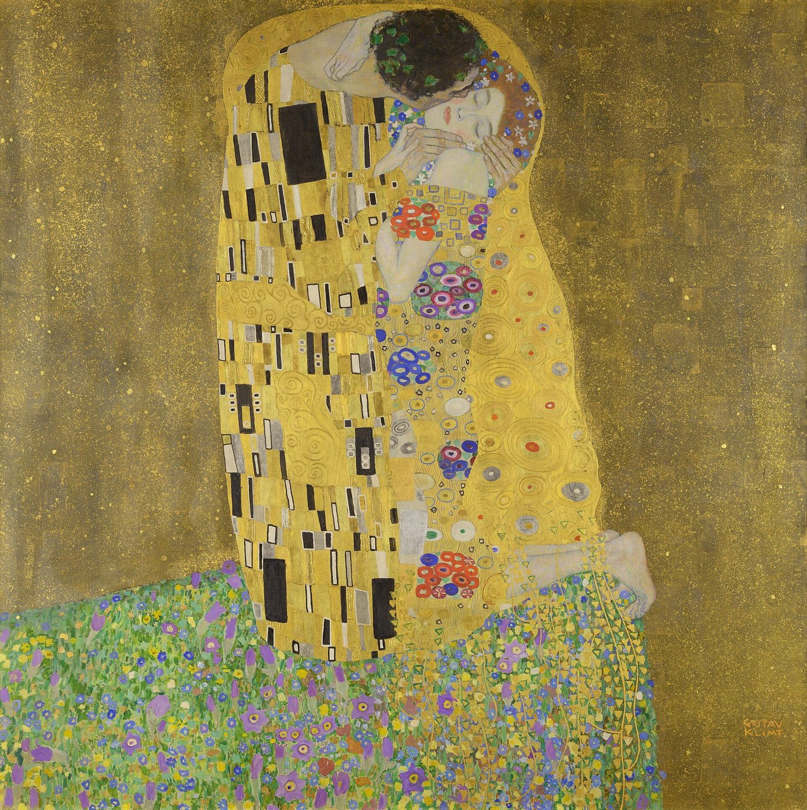
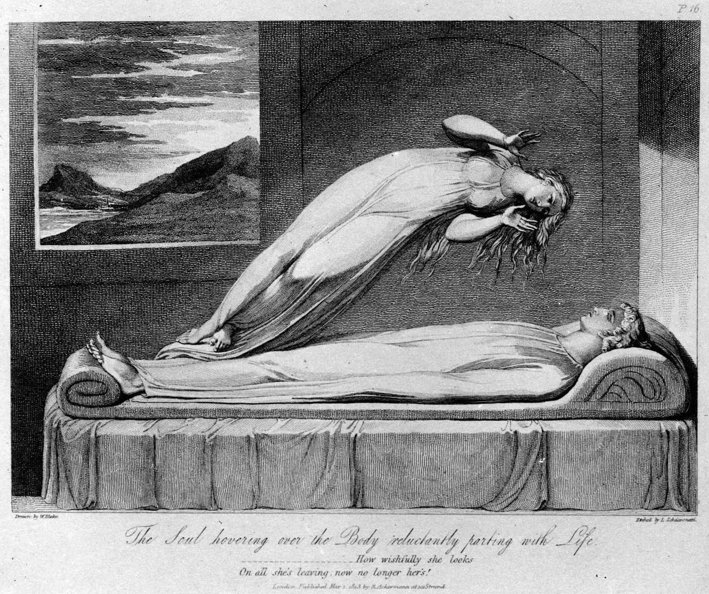
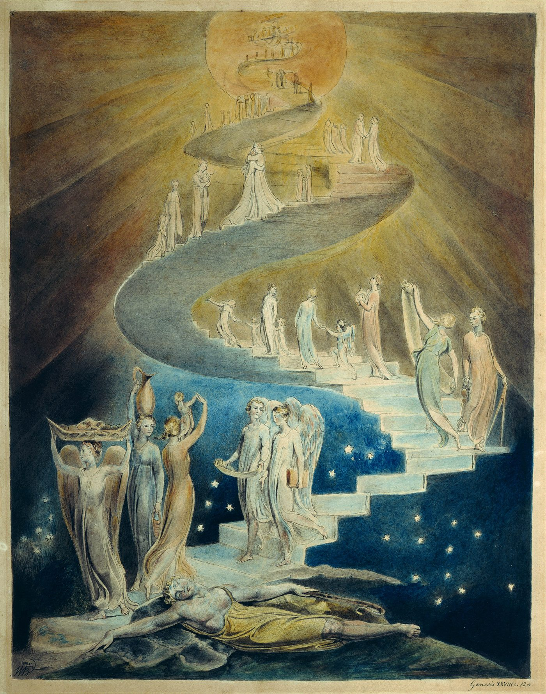
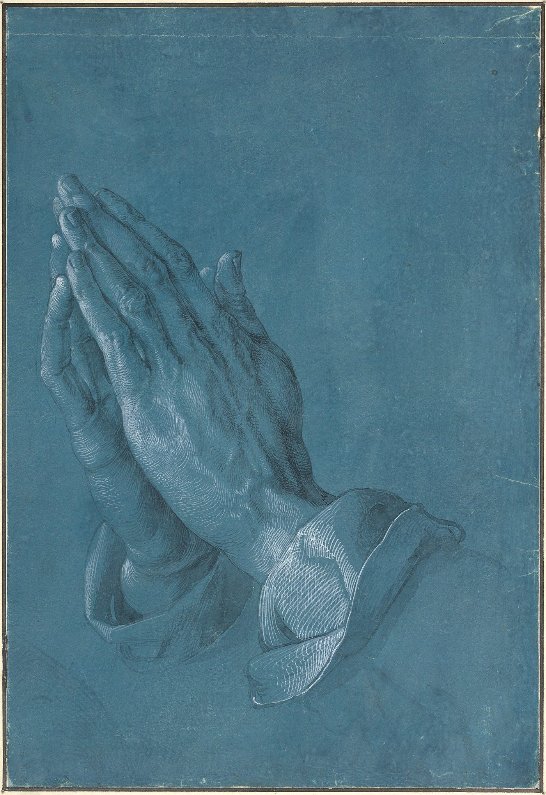
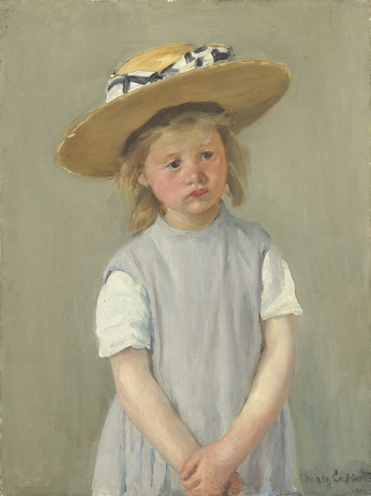

soulmate / soul family
ソウルメイト
初めて会ったのに、この人を知っている気がする。ソウルメイトはひとりなのかを、ソウルファミリーを語る教師の説明からたどります。懐かしさや目の接触などのしるし、プラトンやコールリッジにさかのぼる言葉の来歴、心理学・関係研究者が示す「運命の人」観への見方を整理します。

初めて会ったはずなのに、なぜか懐かしい。目を見れば言葉にしにくい感覚があり、似た経験まで重なっている――その出会いを、ソウルメイトという言葉で探しているのかもしれません。
気になるのは、その相手がただひとりなのか、それとも人生のなかで複数出会うものなのか、ということです。ここでは、ソウルメイトをより広い「ソウルファミリー」の一部として語る考え方をたどり、しるしや出会いについての説明、言葉の来歴、そして「運命の人はひとり」という考えへの研究の見方を並べます。
ソウルメイトはひとりなのか
ソウルメイトをひとりの恋愛相手だけに限らない説明では、まず魂のつながりの集まりが語られます。それが「ソウルファミリー」です。
「ソウルファミリーとは、同じ魂の群れ（ソウルポッド）から来て、よく似た核の周波数を持つ、魂の集まりのことです」
よく使われるたとえは、太陽です。創造の源は、太陽のようなものとして説明されます。そこから創造の流れがあふれ出し、進みながら枝分かれを繰り返す。ひとつの流れが分かれるたびに、小さな流れの群れができる。その群れが、ソウルポッド、つまりソウルファミリーだとされます。同じ流れから分かれたので核の周波数がほとんど同じで、魂のDNAがきょうだいのように似ている、という言い方です。
「だから、地上でソウルファミリーの誰かに会って、その人を見ると、内側で『この魂を知っている』という爆発のようなものが起きる」
この考え方では、つながりの形は恋愛だけではありません。次の説明では、友人、家族、同僚、教師という役も含まれています。
「ソウルファミリーのなかには、いろいろなつながりがあります。ツインレイも、ソウルメイトも、気の合う魂も、そのなかにいる。全員が同時に生まれてくるわけではありません。生まれてきた魂も、それぞれ違う役を演じる。恋人のこともあれば、友人、家族、同僚、教師のこともある。ソウルファミリーの全員が、恋愛の相手というわけではないのです」
ここから導かれる答えは、「ソウルメイトはひとりではない。ただし、その多くは恋人ではない」です。出会いの意味を恋愛だけで測らず、人生の節目に現れる親しさとして受け取る見方でもあります。
血縁の家族とソウルファミリーの違い
血のつながりと魂のつながりは、重なる場合もあれば、重ならない場合もあると述べられています。
「同じものではありません。ソウルファミリーの誰かが血縁の家族として生まれてくることはありますが、とくにライトワーカーは、たいてい、自分のソウルファミリーとは違う血筋に生まれてきます。それは、わざとです。自分の核の周波数とまったく違う家系に入って、先祖の傷を癒し、古い型から抜け出すのを助ける——奉仕として」
「ライトワーカーが『自分は家族のなかの黒い羊だ』とよく言うのは、そのためです」
ソウルメイトのしるしと懐かしさ
懐かしさだけで関係の意味を決めることはできませんが、ソウルファミリーについては、いくつかの感覚が重なるものとして説明されています。
1．温かい懐かしさ — 「初めて会ったのに、家族のように感じる。鏡を見ているようでもある。『この人は、家のように感じる』と言ったことがあるなら、それはたぶん、ソウルファミリーです」
2．経験の似ていること — 必ずではないものの、型があるとされます。自分のソウルファミリーには、子ども時代に同じ種類の傷を負った魂が何人もいる、と語る教師もいます。同じ群れの魂は、地上で似た経験を通ることを選びやすい。話してみると、子ども時代がいろいろな面で似ていることに気づく、という説明です。
3．強い目の接触 — 「目を見ると、吸い込まれるようになる。目は魂の窓で、そこに同じ周波数を感じるから。そして、ソウルファミリーは目で情報をやり取りする。言葉なしに、何かが通っているのが分かる。初めてのときは強すぎて、目をそらしてしまう人もいます」
4．エネルギーの共鳴 — 「ただ、気が合う。どんな役でも——恋人であっても——土台に友情と仲間の感じがある」
5．妙なときに現れる — 「深い変化の時期に現れます。崩れ落ちて、いちばん低く、傷つきやすくなっているとき。あるいは、痛いことを抜けて、エネルギーが広がって、前へ進む準備ができたとき。変化の時期は、受け取れる状態だから」
とくに「いちばん傷つきやすいときに現れる」という感覚は、強い印象を残します。ただし、現れた時期や懐かしさだけが、相手との関係を示す証明になるわけではありません。
ソウルファミリーに出会うには
この分野の教師のもとには、「孤独です。ソウルファミリーに会いたい」という便りが届くとされます。その問いに対しては、探し求める緊張をゆるめることが、最初に置かれています。
まず、孤独のエネルギーから出ることが挙げられます。ひとりでいることと、孤独であることは違うとされます。孤独は切り離されている感覚から来ていて、孤独であるほど、孤独を引き寄せる。それがソウルファミリーを遠ざけている、という説明です。そして、大事な点として繰り返されるのが、見つけなければ、という必要を手放すことです。必要のエネルギーはしがみつく低い波動で、引き寄せるどころか遠ざける、とされます。
そのうえで、語られているのは四つの方向です。どれも相手を選別する技術というより、自分の内側を見つめる話として置かれています。
1．覆いを取る — 過去のカルマ、前世の傷、この人生の癒えていない経験。それらが、核の周波数の上に覆いをかけているとされます。覆いが多いほど迷彩をまとった状態になり、ソウルファミリーからは見えない。癒しの作業で覆いを取るほど、周波数が輝きはじめる、という説明です。灯台のたとえが使われます。どんなに暗い夜でも、船は遠くから灯台を見つけられる。ソウルファミリーが「妙なとき」に現れるのは、まさに覆いを取っている時期だからだ、とされます。
2．本当の自分でいる — 仮面をつけて歩いていたら、ソウルファミリーは見つけられない、とされます。会いたいと言う人に、癒しの作業をしているか、本当の自分で生きているかと尋ねると、深い癒しは怖い、まわりの人の前では仮面が要る、という話になることが多い。それでは見つけてもらえない、という指摘です。
3．呼ぶ — ろうそくを灯すだけの簡単なものでよいとされます。ガイドを呼び、意図を述べ、ソウルファミリーの全体を、神の時のなかで、すべての最善のために引き寄せるという趣旨の言葉を10回繰り返す、という手順です。
4．手放す — 「農夫は種を蒔いて土をかけたら、その場を離れます。種のそばに座って『いつ育つの、まだ見えない』とは言わない。自分の仕事はした。あとは宇宙の仕事。神の時に、目の前に現れる。心配しないこと」
ソウルメイトという言葉の来歴
「ソウルメイト」という言葉には、古い物語と近代以降の言葉の歴史があります。運命の相手を求める想像は、時代ごとに異なる姿で語られてきました。
年表
・紀元前4世紀 — プラトン『饗宴』のなかで、喜劇作家アリストパネスが語る話。かつて人間は、二つの体が背中でつながった球形の存在で、力が強すぎたので神々に二つに引き裂かれた。以来、人はもう片方を探し続けている。「片割れ」という考え方の、西洋でいちばん古い形です
・1822年 — イギリスの詩人サミュエル・テイラー・コールリッジが、若い女性への手紙で「ソウルメイト」という言葉を使う。英語での最初の記録です。「結婚生活で不幸にならないためには、ソウルメイトを持たなければなりません」——彼自身の不幸な結婚から生まれた言葉だと考えられています
・19世紀後半 — アメリカの心霊主義者ランドルフ、オカルト結社「ルクソールのヘルメス同胞団」などが、男女の対が来世まで一緒に霊的に進化する、という教えを語る
・20世紀前半 — 心霊治療家エドガー・ケイシーが、すべての人は転生を繰り返しながら片割れを探しており、カルマの負債をすべて解消すればソウルメイトと融合して根源に還る、と語る
・1980年代 — 女優シャーリー・マクレーンが著書のなかで繰り返しソウルメイトを語り、女性読者のあいだで「ソウルメイトに出会いたい」という思いが高まる。マクレーンの説明では、ソウルメイトはビッグバンのときに互いに属する対として作られた存在。この言葉が広く普及したのは、1980年代以降です
コールリッジの「不幸な結婚」と、マクレーン以後の「出会いたい」という願いには、いま目の前にいない相手への思いが映っています。この言葉は、最初から、いまここにいない誰かを指す言葉でした。
赤い糸とバシェルト
運命の相手をめぐる物語は、日本にもユダヤ教にも見られます。似た形をもちながら、相手との結びつきだけでなく、生き方にも目を向ける語りがあります。
ユダヤ教の「バシェルト」
別の伝統にも、同じ形があります。イディッシュ語の「バシェルト（定められた人）」。タルムードには「子が形づくられる40日前に、天の声が、誰の娘と結婚するかを告げる」とあり、カバラの文献は、魂は生まれる前に男女の半分に分けられ、結婚で再び結ばれる、と説きます。
ただし、ユダヤ教の倫理はこう付け加えています。運命は自由意志によって形づくられる。よい性質を育てなかった人は、定められた相手を、より値する別の人に失うことがある、と。「運命の相手」と「自分を磨くこと」が、切り離されていません。
日本語では、「赤い糸」。小指に結ばれた見えない糸で、生まれる前から結ばれた相手とつながっている、という中国由来の言い伝えです。ソウルメイトという言葉が入ってくる前から、この国には「運命の人」の言葉がありました。
運命の人はひとりという考えと研究
「運命の人はひとり」という考えは、希望や慰めを含む一方で、関係をどう見つめるかという問いも生みます。研究の側は、理想と現実のあいだにある難しさを指摘しています。
「運命の人はひとり」と信じることについて
アメリカの20〜29歳の独身者を対象にした調査では、94%がソウルメイトを信じており、特別な人がどこかで自分を待っていると考えていました。ヨーロッパの若年層にも同じ傾向があります。
心理学者と関係の研究者の側の見方をこうまとめています。「ただひとりの定められたソウルメイトがいる」という信念は、非現実的な期待を生み、関係の満足を妨げうる。愛を運命の問題として捉えると、話し合いや衝突の解決といった実際の技能を育てることから遠ざかり、相手が理想に届かなかったときに失望しやすくなる、と。
社会科学には「ソウルメイト型」の結婚と「制度型」の結婚という区別があります。前者は「ひとりの完全な人が自分を完成させる」という信念にもとづき、それぞれの内なる欲求と、感情と性の親密さを重んじる。後者は、永続性、互いの助け合い、子育てという課題、友人や家族や宗教のつながりを重んじる。研究者は、制度型の結婚のほうが、より多くの結婚を楽しんでいると報告しています。
資料に、宗教学者の津城寛文の指摘が引かれています。前世療法でソウルメイトという言葉が強調される場合、それは「恋人探しのワークショップや街角の占いに近づきがち」だ、と。そして、ソウルメイトとの出会いだけを目指す転生観には、負債の償いも、社会の倫理も、魂の進化も、ほとんど見られない、と。
一方で、ソウルファミリーについての説明にも、相手だけを求めない姿勢があります。「ソウルメイトはひとりではない」「多くは恋人ではない」「見つけなければという必要を手放せ」「先に自分の覆いを取れ」といった言葉です。「ただひとりの運命の人を探す」という形が、最初から外されているのです。
「よい性質を育てなかった人は相手を失う」という考え、「覆いを取る」という表現、そして研究者が述べる「関係の技能を育てる」という見方は、異なる場所から語られています。けれど、運命の相手を待つことだけで終わらせず、自分のあり方と関係のあり方に目を向ける点では、近い方向を指しているようにも見えます。
ソウルメイトと近い言葉
- ツインレイ — ソウルファミリーのなかの、ひとつのつながり。別のページで扱っています
- ソウルコントラクト — 「力を与える契約」と「力を奪う契約」の見分け方。別のページで扱っています
- スターシード — 「家族のなかで浮いている」感覚と、所属の欲求について。別のページで扱っています
- 赤い糸・バシェルト — 上に書いた、「運命の相手」の日本語とユダヤ教の言葉
- 影（シャドウ） — 「覆いを取る」作業の入口として挙げられているもの。別のページで扱っています
上の5番目のしるし「いちばん傷つきやすいときに現れる」は、そのまま、ソウルコントラクトのページに書いた「力を奪う関係」が始まる条件でもあります。崩れ落ちているときに現れて、懐かしく感じ、目を見ると吸い込まれる——それだけでは、ソウルファミリーかどうかは分かりません。見分けるものは、4番目「土台に友情と仲間の感じがあるか」と、あのページの「尊重があるか」「力を奪われていないか」です。懐かしさは、判断の材料にはなりますが、証明にはなりません。
出典・参考
- Christina Lopes, How To Find Your SOUL FAMILY In 3 Easy Steps! [You Are Not Alone]（YouTube）ソウルファミリーの定義（魂の群れ）、血縁の家族との違い、五つのしるし、四つの方法。引用は字幕による
- ソウルメイト（日本語版ウィキペディア）プラトンの球体人間、コールリッジ、ケイシー、シャーリー・マクレーン、94%の調査、津城寛文の指摘
- Soulmate（英語版ウィキペディア）1822年の手紙、ユダヤ教の「バシェルト」、心理学の側の批判、「ソウルメイト型」と「制度型」の結婚
関連することば

astral projection / out-of-body experienceアストラルトラベル眠り際に体が動かず、天井近くから自分を見た気がした。幽体離脱とは何かを、この分野の実践者の言葉、神経科学者・心理学者による体外離脱の説明、研究者ディーン・シールズの文化研究を引きながら整理します。戻れない不安、眠りや金縛りとの関係、5段階の方法と注意点、生霊・あくがるも解説します。
ascension / 5Dアセンション疲れが抜けず、動悸や人間関係の変化が気になる。アセンション症状とは何かを、解説動画の語り手が挙げる六つ・31の変化、並木良和や考古天文学者アンソニー・アヴェニの言葉、精神医学の見方とともにたどり、5次元や地球変容の語りの来歴、受診が必要な症状との線引きを整理します。ascendant / rising signアセンダント自分の星座より、周囲から受け取られる印象のほうがしっくりくる。アセンダント（上昇宮）とは、生まれた瞬間に東の地平線にあった星座で、第一印象や世界との接点としてどう捉えられるのかを解説します。CHANIとウィキペディアの説明を引き、太陽・月との違い、出生時刻と出生地が必要な理由、ビッグスリーでの位置づけを紹介します。affirmationsアファメーション「私は豊かだ」「私は愛されている」と毎朝唱えている。でも、唱えるたびに、嘘をついている気がする。効いているのか、逆効果なのか。この分野で「これを先に身につけないと効かない」と言われている一つのこつと、38の言葉。この言葉の来歴（1910年、1984年）、日本語の「言霊」、そして心理学が2009年に見つけた「効く人と、逆効果になる人」の違い。
how to pray祈り方祈りたいのに、誰に何を言えばいいのか分からない。祈りを「宇宙との対等な会話」と語るこの分野の教師の言葉から、言葉の置き方や手を合わせる形をたどり、日本語版ウィキペディアの記述とコクラン総説などの研究が示す範囲を整理します。
inner childインナーチャイルド恋愛で、相手の一言に急に黙り込んでしまう。インナーチャイルドを手がかりに、幼少期の安心感と親しい関係での反応のつながりを整理します。精神科医・相澤雅子、心理カウンセラー・衛藤信之、心理学者ニコール・ルペラらの語りを引き、向き合い方、心理療法との重なり、科学的な限界まで解説します。